|
||
|
Anna
& Maria After a Cutthroat Game of Tombola on the Giudecca
|
(please
click on the small images below to see a larger image) |
|
| 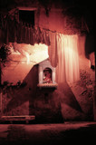 | 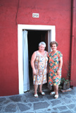 | 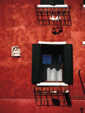 |
| Calle Stella | Burano Ladies in Their Housecoats | Tintoretto's Shop |
|
Now I began to read laundry lines as if they were lines of a diary written by a woman in her home. An Italian woman expresses herself in the air. She hangs out her furs, her lingerie, her husband's hats and rowing club shirts, and her children's soccer uniforms and team pennants. Watching, you can learn about their ages, their politics, their sizes. A casalinga shows you who she is and who she wants to be.
| ||
| 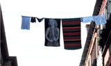
Marilyn on the Giudecca |
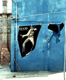
Elvis on Burano |

Nausikaa in Castello |
|
This is my good friend Margherita Citon, Venice's
first woman to win the Regata Storica rowing race. She turned fifty
years old the next year, and the regatta committee told her she was
too old to enter the race. She sued and won the suit and the next
Regata Storica. Margherita is a farmer on the Island of San Erasmo.
She shows me her figs.
This is how I met Antonia. She told me that the secret of life was a real mamma casalinga. Without loving homes and good food, children don't grow up right; the center doesn't hold, and the world will fall apart, says Antonia.
Here is Amelia, asking me why I am taking her picture and where I
am going to send her, where I am going to show the picture. She refused
to send her wedding ring to Mussolini when he ordered Italian housewives
to give him their gold for Fascist the war effort; instead she sold
it for food for her children, who were much more important than Il
Duce, she says. She is 88 years old: "This new world is not my
world," says Amelia.
|
||
| 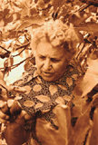 Margherita Citon |
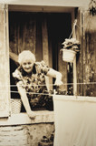 Antonia's Line |
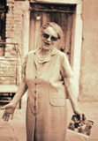 Amelia at 88 |
|
This is Rina who has raised eight kids with her fisherman husband,
all of whom turned out well, she says emphatically. Rina would call
me up in the morning and say "Olli! I've just hung up my best
sheets. Come right over and photograph them." This is Renata,
and this is Renata's handiwork; the backdrop is the Women's Prison.
|
||
| 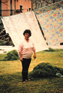 Rina Shows Me Her Best Sheets |
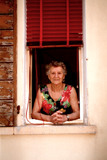 Renata on the Giudecca |
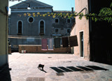 Renata's Laundry |
All images on these pages are copyright © 1999 by Holly Smith Pedlosky
To learn more, send e-mail to Holly Smith Pedlosky
|
Would you like to meet some more Venetian housewives? |
Would you like to see some more Laundry? |
Would you like to find out more about laundry, cloth, and draped fabric in Venetian art? |